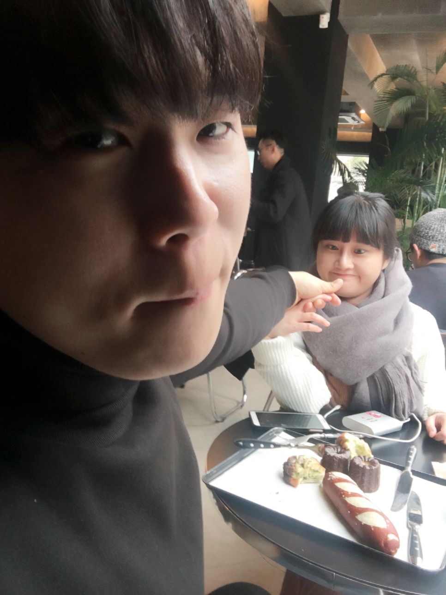

오동배의 홈입니다^^
오동배 소개
오동배 사진
오동배 놀이
오동배 소개
1004같은
오동배
소개를 시작합니다!!^^

저는 오동배입니다^^
저는 먹는 걸 좋아하고 팽총이를 아주 좋아합니다^^
제가 좋아하는 크러쉬 음악을 함께 들어보세요~^^
Please enable JavaScript to view the
comments powered by Disqus.